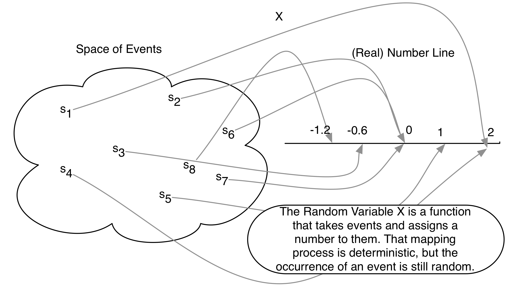
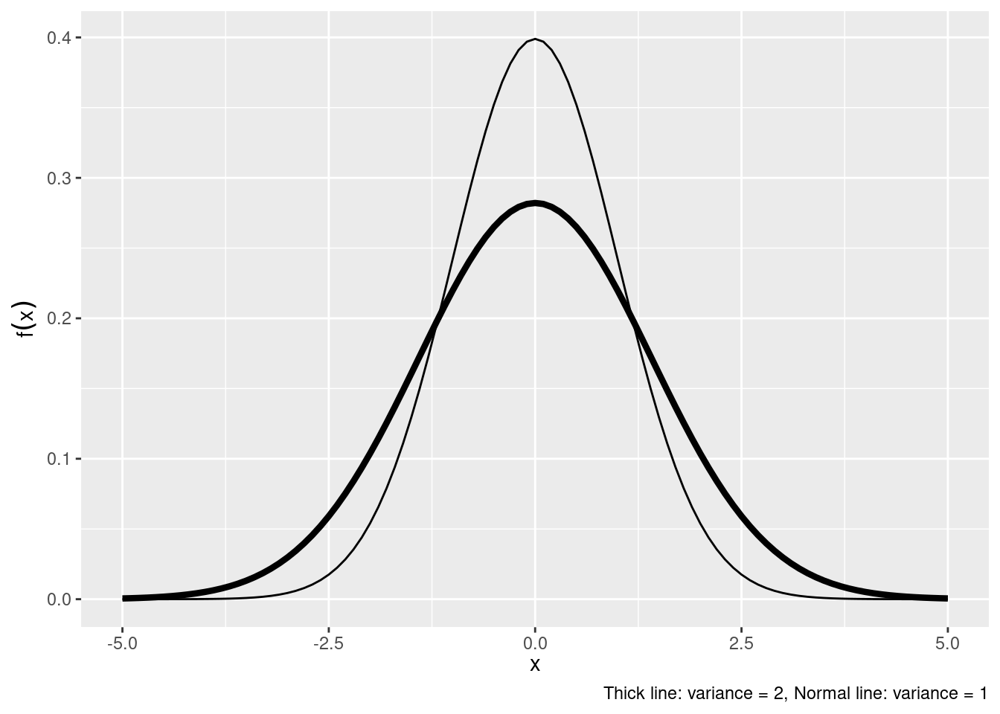

6 Probability Theory
Probability and Inferences are mirror images of each other, and both are integral to social science. Probability quantifies uncertainty, which is important because many things in the social world are at first uncertain. Inference is then the study of how to learn about facts you don’t observe from facts you do observe.
6.1 Counting rules
Probability in high school is usually really about combinatorics: the probability of event A is the number of ways in which A can occur divided by the number of all other possibilities. This is a very simplified version of probability, which we can call the “counting definition of probability”, essentially because each possible event to count is often equally likely and discrete. But it is still good to review the underlying rules here.
Fundamental Theorem of Counting: If an object has \(j\) different characteristics that are independent of each other, and each characteristic \(i\) has \(n_i\) ways of being expressed, then there are \(\prod_{i = 1}^j n_i\) possible unique objects.
Example 6.1 (Counting Possibilities) Suppose we are given a stack of cards. Cards can be either red or black and can take on any of 13 values. There is only one of each color-number combination. In this case,
\(j =\)
\(n_{\text{color}} =\)
\(n_{\text{number}} =\)
Number of Outcomes \(=\)
We often need to count the number of ways to choose a subset from some set of possibilities. The number of outcomes depends on two characteristics of the process: does the order matter and is replacement allowed?
It is useful to think of any problem concretely, e.g. through a sampling table: If there are \(n\) objects which are numbered 1 to \(n\) and we select \(k < n\) of them, how many different outcomes are possible?
If the order in which a given object is selected matters, selecting 4 numbered objects in the following order (1, 3, 7, 2) and selecting the same four objects but in a different order such as (7, 2, 1, 3) will be counted as different outcomes.
If replacement is allowed, there are always the same \(n\) objects to select from. However, if replacement is not allowed, there is always one less option than the previous round when making a selection. For example, if replacement is not allowed and I am selecting 3 elements from the following set {1, 2, 3, 4, 5, 6}, I will have 6 options at first, 5 options as I make my second selection, and 4 options as I make my third.
So if order matters AND we are sampling with replacement, the number of different outcomes is \(n^k\).
If order matters AND we are sampling without replacement, the number of different outcomes is \(n(n-1)(n-2)...(n-k+1)=\frac{n!}{(n-k)!}\).
If order doesn’t matter AND we are sampling without replacement, the number of different outcomes is \(\binom{n}{k} = \frac{n!}{(n-k)!k!}\).
Expression \(\binom{n}{k}\) is read as “n choose k” and denotes \(\frac{n!}{(n-k)!k!}\). Also, note that \(0! = 1\).
Example 6.2 (Counting) There are five balls numbered from 1 through 5 in a jar. Three balls are chosen. How many possible choices are there?
Ordered, with replacement \(=\)
Ordered, without replacement \(=\)
Unordered, without replacement \(=\)
Exercise 6.1 (Counting) Four cards are selected from a deck of 52 cards. Once a card has been drawn, it is not reshuffled back into the deck. Moreover, we care only about the complete hand that we get (i.e. we care about the set of selected cards, not the sequence in which it was drawn). How many possible outcomes are there?
6.2 Probability
Probability Definitions: Formal and Informal
Many things in the world are uncertain. In everyday speech, we say that we are uncertain about the outcome of random events. Probability is a formal model of uncertainty which provides a measure of uncertainty governed by a particular set of rules. A different model of uncertainty would, of course, have a set of rules different from anything we discuss here. Our focus on probability is justified because it has proven to be a particularly useful model of uncertainty.
Sample Space (S): A set or collection of all possible outcomes from some process. Outcomes in the set can be discrete elements (countable) or points along a continuous interval (uncountable).
Probability Distribution Function: a mapping of each event in the sample space \(S\) to the real numbers that satisfy the following three axioms (also called Kolmogorov’s Axioms).
Formally,
Definition 6.1 (Probability) Probability is a function that maps events from a sample space to a real number, obeying the axioms of probability.
The axioms of probability make sure that the separate events add up in terms of probability, and – for standardization purposes – that they add up to 1.
- Definition 6.2 (Axioms of Probability)
- For any event \(A\), \(P(A)\ge 0\).
- \(P(S)=1\)
- The Countable Additivity Axiom: For any sequence of disjoint (mutually exclusive) events \(A_1,A_2,\ldots\) (of which there may be infinitely many), \[P\left( \bigcup\limits_{i=1}^k A_i\right)=\sum\limits_{i=1}^k P(A_i)\]
The last axiom is an extension of a union to infinite sets. When there are only two events in the space, it boils down to:
\[\begin{align*} P(A_1 \cup A_2) = P(A_1) + P(A_2) \quad\text{for disjoint } A_1, A_2 \end{align*}\]
Probability Operations
Using these three axioms, we can define all of the common rules of probability.
- \(P(\emptyset)=0\)
- For any event \(A\), \(0\le P(A) \le 1\).
- \(P({A}^C)=1-P(A)\)
- If \(A\subset B\) (\(A\) is a subset of \(B\)), then \(P(A)\le P(B)\).
- For any two events \(A\) and \(B\), \(P(A\cup B)=P(A)+P(B)-P(A\cap B)\)
- Boole’s Inequality: For any sequence of \(n\) events (which need not be disjoint) \(A_1,A_2,\ldots,A_n\), then \(P\left( \bigcup\limits_{i=1}^n A_i\right) \leq \sum\limits_{i=1}^n P(A_i)\).
Example 6.3 (Probability) Assume we have an evenly-balanced, six-sided die.
Then,
- Sample space S =
- \(P(1)=\cdots=P(6)=\)
- \(P(\emptyset)=P(7)=\)
- \(P\left( \{ 1, 3, 5 \} \right)=\)
- \(P\left( \{ 1, 2 \}^C \right)= P\left( \{ 3, 4, 5, 6 \}\right)=\)
- Let \(A=\{ 1,2,3,4,5 \}\subset S\). Then \(P(A)=5/6<P(S)=\)
- Let \(A=\{ 1, 2, 3 \}\) and \(B=\{ 2, 4, 6 \}\). Then \(A\cup B\)? \(A\cap B\)? \(P(A \cup B)\)?
Exercise 6.2 (Probability) Suppose you had a pair of four-sided dice. You sum the results from a single toss. Let us call this sum, or the outcome, X.
What is \(P(X = 5)\), \(P(X = 3)\), \(P(X = 6)\)?
What is \(P(X=5 \cup X = 3)^C\)?
6.3 Conditional Probability and Bayes Rule
Conditional Probability: The conditional probability \(P(A|B)\) of an event \(A\) is the probability of \(A\), given that another event \(B\) has occurred. Conditional probability allows for the inclusion of other information into the calculation of the probability of an event. It is calculated as
\[P(A|B)=\frac{P(A\cap B)}{P(B)}\]
Note that conditional probabilities are probabilities and must also follow the Kolmagorov axioms of probability.
Example 6.4 (Conditional Probability 1) Assume \(A\) and \(B\) occur with the following frequencies: \(\quad\)
| \(A\) | \(A^c\) | |
|---|---|---|
| \(B\) | \(n_{ab}\) | \(n_{a^cb}\) |
| \(B^C\) | \(n_{ab^c}\) | \(n_{(ab)^c}\) |
and let \(n_{ab}+n_{a^Cb}+n_{ab^C}+n_{(ab)^C}=N\). Then
- \(P(A)=\)
- \(P(B)=\)
- \(P(A\cap B)=\)
- \(P(A|B)= \frac{P(A\cap B)}{P(B)}=\)
- \(P(B|A)= \frac{P(A\cap B)}{P(A)}=\)
Example 6.5 (Conditional Probability 2) A six-sided die is rolled. What is the probability of a 1, given the outcome is an odd number?
You could rearrange the fraction to highlight how a joint probability could be expressed as the product of a conditional probability.
Definition 6.3 (Multiplicative Law of Probability) The probability of the intersection of two events \(A\) and \(B\) is \(P(A\cap B)=P(A)P(B|A)=P(B)P(A|B)\) which follows directly from the definition of conditional probability. More generally,
\[P(A_1\cap \cdots\cap A_k) = P(A_k| A_{k-1}\cap \cdots \cap A_1)\times P(A_{k-1}|A_{k-2}\cap \cdots A_1) \times \ldots \times P(A_2|A_1)\times P(A_1)\]
Sometimes it is easier to calculate these conditional probabilities and sum them than it is to calculate \(P(A)\) directly.
Definition 6.4 (Law of total probability) Let \(S\) be the sample space of some experiment and let the disjoint \(k\) events \(B_1,\ldots,B_k\) partition \(S\), such that \(P(B_1\cup ... \cup B_k) = P(S) = 1\). If \(A\) is some other event in \(S\), then the events \(A\cap B_1, A\cap B_2, \ldots, A\cap B_k\) will form a partition of \(A\) and we can write \(A\) as \[A=(A\cap B_1)\cup\cdots\cup (A\cap B_k)\].
Since the \(k\) events are disjoint,
\[\begin{eqnarray*} P(A)&=&\sum\limits_{i=1}^k P(A \cap B_i)\\ &=&\sum\limits_{i=1}^k P(B_i)P(A|B_i) \end{eqnarray*}\]
Bayes Rule: Assume that events \(B_1,\ldots,B_k\) form a partition of the space \(S\). Then by the Law of Total Probability
\[P(B_j|A)= \frac{P(A \cap B_j)} {P(A)} = \frac{P(B_j) P(A|B_j)}{\sum\limits_{i=1}^k P(B_i)P(A|B_i)}\]
If there are only two states of \(B\), then this is just \[P(B_1|A)=\frac{P(B_1)P(A|B_1)} {P(B_1)P(A|B_1)+P(B_2)P(A|B_2)}\]
Bayes’ rule determines the posterior probability of a state \(P(B_j|A)\) by calculating the probability \(P(A \cap B_j)\) that both the event \(A\) and the state \(B_j\) will occur and dividing it by the probability that the event will occur regardless of the state (by summing across all \(B_i\)). The states could be something like Normal/Defective, Healthy/Diseased, Republican/Democrat/Independent, etc. The event on which one conditions could be something like a sampling from a batch of components, a test for a disease, or a question about a policy position.
Prior and Posterior Probabilities: Above, \(P(B_1)\) is often called the prior probability, since it’s the probability of \(B_1\) before anything else is known. \(P(B_1|A)\) is called the posterior probability, since it’s the probability after other information is taken into account.
Example 6.6 (Bayes’ Rule) In a given town, 40% of the voters are Democrat and 60% are Republican. The president’s budget is supported by 50% of the Democrats and 90% of the Republicans. If a randomly (equally likely) selected voter is found to support the president’s budget, what is the probability that they are a Democrat?
Exercise 6.3 (Conditional Probability) Assume that 2% of the population of the U.S. are members of some extremist militia group. We develop a survey that positively classifies someone as being a member of a militia group given that they are a member 95% of the time and negatively classifies someone as not being a member of a militia group given that they are not a member 97% of the time. What is the probability that someone positively classified as being a member of a militia group is actually a militia member?
6.4 Independence
Definition 6.5 (Independence) If the occurrence or nonoccurrence of either events \(A\) and \(B\) provides no information about the occurrence or nonoccurrence of the other, then \(A\) and \(B\) are independent.
If \(A\) and \(B\) are independent, then
- \(P(A|B)=P(A)\)
- \(P(B|A)=P(B)\)
- \(P(A\cap B)=P(A)P(B)\)
- More generally than the above, \(P(\bigcap_{i=1}^k A_i) = \prod_{i = 1}^K P(A_i)\)
Are mutually exclusive events independent of each other?
No. If A and B are mutually exclusive, then they cannot happen simultaneously. If we know that A occurred, then we know that B couldn’t have occurred. Because of this, A and B aren’t independent.
Pairwise Independence: A set of more than two events \(A_1, A_2, \dots, A_k\) is pairwise independent if \(P(A_i\cap A_j)=P(A_i)P(A_j)\), \(\forall i\neq j\). Note that this does not necessarily imply joint independence.
Conditional Independence: If \(A\) and \(B\) are independent once you know the occurrence of a third event \(C\), then \(A\) and \(B\) are conditionally independent (conditional on \(C\)):
- \(P(A|B \cap C)=P(A|C)\)
- \(P(B|A \cap C)=P(B|C)\)
- \(P(A\cap B|C)=P(A|C)P(B|C)\)
Just because two events are conditionally independent does not mean that they are independent. Actually it is hard to think of real-world things that are “unconditionally” independent. That’s why it’s always important to ask about a finding: What was it conditioned on? For example, suppose that a graduate school admission decisions are done by only one professor, who picks a group of 50 bright students and flips a coin for each student to generate a class of about 25 students. Then the the probability that two students get accepted are conditionally independent, because they are determined by two separate coin tosses. However, this does not mean that their admittance is not completely independent. Knowing that student \(A\) got in gives us information about whether student \(B\) got in, if we think that the professor originally picked her pool of 50 students by merit.
Perhaps more counter-intuitively: If two events are already independent, then it might seem that no amount of “conditioning” will make them dependent. But this is not always so. For example, imagine that you own a house with a lawn (a very extreme hypothetical!) Let \(A\) be the event that it rained yesterday and \(B\) the event that your sprinkler system went off yesterday. Suppose that your sprinkler system is set to randomly go off and so \(A\) and \(B\) are independent of one another. \(P(A \mid B) = P(A).\) But now let \(C\) be the event that the grass is wet. The grass can be wet either due to the rain or due to the sprinkler. For conditional independence to hold here, then \(P(A \mid C)\) must be equal to \(P(A \mid B \cap C).\) But this is not true.
Let \(P(A) = .5\) and \(P(B) = .5\).
The marginal probability \(P(C)\) is
\[P(C) = P(A \cup B) = P(A) + P(B) - P(A \cap B) = .75\] The conditional probability \(P(A | C)\) is
\[P(A|C) = \frac{P(C|A)P(A)}{P(C)} = \frac{1 \times .5}{.75} = \frac{2}{3}\]
The conditional probability \(P(A | B \cap C)\) is
\[P(A | B \cap C) = \frac{P(C \cap B| A) P(A)}{P(C \cap B)} = \frac{P(C \cap B| A) P(A)}{P(C|B)P(B)} \frac{.5\times .5}{.5} = \frac{1}{2}\] Intuitively, given that the grass is wet, knowing that it rained yesterday tells us that it is less likely that the sprinkler also went off!
6.5 Random Variables
Most questions in the social sciences involve events, rather than numbers per se. To analyze and reason about events quantitatively, we need a way of mapping events to numbers. A random variable does exactly that.
Definition 6.6 (Random Variable) A random variable is a measurable function \(X\) that maps from the sample space \(S\) to the set of real numbers \(R.\) It assigns a real number to every outcome \(s \in S\).
Figure 6.1 shows a image of the function. It might seem strange to define a random variable as a function – which is neither random nor variable. The randomness comes from the realization of an event from the sample space \(s\).
Randomness means that the outcome of some experiment is not deterministic, i.e. there is some probability (\(0 < P(A) < 1\)) that the event will occur.
The support of a random variable is all values for which there is a positive probability of occurrence.
Example: Flip a fair coin two times. What is the sample space?
A random variable must map events to the real line. For example, let a random variable \(X\) be the number of heads. The event \((H, H)\) gets mapped to 2 \(X(s) = 2\), and the events \(\{(H, T), (T, H)\}\) gets mapped to 1 \((X(s) = 1)\), the event \((T, T)\) gets mapped to 0 \((X(s) = 0)\).
What are other possible random variables?
6.6 Distributions
We now have two main concepts in this section – probability and random variables. Given a sample space \(S\) and the same experiment, both probability and random variables take events as their inputs. But they output different things (probabilities measure the “size” of events, random variables give a number in a way that the analyst chose to define the random variable). How do the two concepts relate?
The concept of distributions is the natural bridge between these two concepts.
Definition 6.7 (Distribution of a random variable) A distribution of a random variable is a function that specifies the probabilities of all events associated with that random variable. There are several types of distributions: A probability mass function for a discrete random variable and probability density function for a continuous random variable.
Notice how the definition of distributions combines two ideas of random variables and probabilities of events. First, the distribution considers a random variable, call it \(X\). \(X\) can take a number of possible numeric values.
Example 6.7 (Total Number of Occurrences) Consider three binary outcomes, one for each patient recovering from a disease: \(R_i\) denotes the event in which patient \(i\) (\(i = 1, 2, 3\)) recovers from a disease. \(R_1\), \(R_2\), and \(R_3\). How would we represent the total number of people who end up recovering from the disease?
Solution. Define the random variable \(X\) be the total number of people (out of three) who recover from the disease. Random variables are functions, that take as an input a set of events (in the sample space \(S\)) and deterministically assigns them to a number of the analyst’s choice.
Recall that with each of these numerical values there is a class of events. In the previous example, for \(X = 3\) there is one outcome (\(R_1, R_2, R_3\)) and for \(X = 1\) there are multiple (\(\{(R_1, R_2^c, R_3^c), (R_1^c, R_2, R_3^c), (R_1^c, R_2^c, R_3), \}\)). Now, the thing to notice here is that each of these events naturally come with a probability associated with them. That is, \(P(R_1, R_2, R_3)\) is a number from 0 to 1, as is \(P(R_1, R_2^c, R_3^c)\). These all have probabilities because they are in the sample space \(S\). The function that tells us these probabilities that are associated with a numerical value of a random variable is called a distribution.
In other words, a random variable \(X\) induces a probability distribution \(P\) (sometimes written \(P_X\) to emphasize that the probability density is about the r.v. \(X\))
Discrete Random Variables
The formal definition of a random variable is easier to given by separating out two cases: discrete random variables when the numeric summaries of the events are discrete, and continuous random variables when they are continuous.
Definition 6.8 (Discrete Random Variable) \(X\) is a discrete random variable if it can assume only a finite or countably infinite number of distinct values. Examples: number of wars per year, heads or tails.
The distribution of a discrete r.v. is a PMF:
Definition 6.9 (Probability Mass Function) For a discrete random variable \(X\), the probability mass function (Also referred to simply as the “probability distribution.”) (PMF), \(p(x)=P(X=x)\), assigns probabilities to a countable number of distinct \(x\) values such that
- \(0\le p(x)\le 1\)
- \(\sum\limits_y p(x)=1\)
Example: For a fair six-sided die, there is an equal probability of rolling any number. Since there are six sides, the probability mass function is then \(p(y)=1/6\) for \(y=1,\ldots,6\), 0 otherwise.}
In a discrete random variable, cumulative distribution function , \(F(x)\) or \(P(X\le x)\), is the probability that \(X\) is less than or equal to some value \(x\), or \[P(X\le x)=\sum\limits_{i\le x} p(i)\]
Properties a CDF must satisfy:
- \(F(x)\) is non-decreasing in \(x\).
- \(\lim\limits_{x \to -\infty} F(x) = 0\) and \(\lim\limits_{x \to \infty} F(x) = 1\)
- \(F(x)\) is right-continuous.
Note that \(P(X > x) = 1 - P(X \le x)\).
Definition 6.10 For a fair six-sided die with its value as \(Y\), What are the following?
- \(P(Y\le 1)\)
- \(P(Y\le 3)\)
- \(P(Y\le 6)\)
Continuous Random Variables
We also have a similar definition for continuous random variables.
Definition 6.11 (Continuous Random Variable) \(X\) is a continuous random variable if there exists a nonnegative function \(f(x)\) defined for all real \(x\in (-\infty,\infty)\), such that for any interval \(A\), \(P(X\in A)=\int\limits_A f(x)dx\). Examples: age, income, GNP, temperature.
Definition 6.12 (Probability density function) The function \(f\) above is called the probability density function (pdf) of \(X\) and must satisfy \[f(x)\ge 0\] \[\int\limits_{-\infty}^\infty f(x)dx=1\]
Note also that \(P(X = x)=0\) — i.e., the probability of any point \(y\) is zero.
While continuous random variables do not have a PMF (since the PMF would be \(0\) at every point), the cumulative distribution function is defined in the exact same way. The cumulative distribution gives the probability that \(Y\) lies on the interval \((-\infty,y)\) and is defined as \[F(x)=P(X\le x)=\int\limits_{-\infty}^x f(s)ds\]
We can also make statements about the probability of \(Y\) falling in an interval \(a\le y\le b\). \[P(a\le x\le b)=\int\limits_a^b f(x)dx\]
The PDF and CDF are linked by the integral: The CDF of the integral of the PDF: \[f(x) = F'(x)=\frac{dF(x)}{dx}\]
Example 6.8 (Continuous R.V.) For \(f(y)=1, \quad 0<y<1\), find: (1) The CDF \(F(y)\) and (2) The probability \(P(0.5<y<0.75)\).
6.7 Joint Distributions
Often, we are interested in two or more random variables defined on the same sample space. The distribution of these variables is called a joint distribution. Joint distributions can be made up of any combination of discrete and continuous random variables.
Joint Probability Distribution: If both \(X\) and \(Y\) are random variable, their joint probability mass/density function assigns probabilities to each pair of outcomes
Discrete:
\[p(x, y) = P(X = x, Y = y)\]
such that \(p(x,y) \in [0,1]\) and \[\sum\sum p(x,y) = 1\]
Continuous:
\[f(x,y);P((X,Y) \in A) = \int\!\!\!\int_A f(x,y)dx dy \]
s.t. \(f(x,y)\ge 0\) and
\[\int_{-\infty}^\infty\int_{-\infty}^\infty f(x,y)dxdy = 1\]
If X and Y are independent, then \(P(X=x,Y=y) = P(X=x)P(Y=y)\) and \(f(x,y) = f(x)f(y)\)
Marginal Probability Distribution: probability distribution of only one of the two variables (ignoring information about the other variable), we can obtain the marginal distribution by summing/integrating across the variable that we don’t care about:
- Discrete: \(p_X(x) = \sum_i p(x, y_i)\)
- Continuous: \(f_X(x) = \int_{-\infty}^\infty f(x,y)dy\)
Conditional Probability Distribution: probability distribution for one variable, holding the other variable fixed. Recalling from the previous lecture that \(P(A|B)=\frac{P(A\cap B)}{P(B)}\), we can write the conditional distribution as
- Discrete: \(p_{Y|X}(y|x) = \frac{p(x,y)}{p_X(x)}, \quad p_X(x) > 0\)
- Continuous: \(f_{Y|X}(y|x) = \frac{f(x,y)}{f_X(x)},\quad f_X(x) > 0\)
Exercise 6.4 (Discrete, Joint Distributions) Suppose we are interested in the outcomes of flipping a coin and rolling a 6-sided die at the same time. The sample space for this process contains 12 elements: \[\{(H, 1), (H, 2), (H, 3), (H, 4), (H, 5), (H, 6), (T, 1), (T, 2), (T, 3), (T, 4), (T, 5), (T, 6)\}\] We can define two random variables \(X\) and \(Y\) such that \(X = 1\) if heads and \(X = 0\) if tails, while \(Y\) equals the number on the die.
We can then make statements about the joint distribution of \(X\) and \(Y\). What are the following?
- \(P(X=x)\)
- \(P(Y=y)\)
- \(P(X=x, Y=y)\)
- \(P(X=x|Y=y)\)
- Are X and Y independent?
6.8 Expectation
We often want to summarize some characteristics of the distribution of a random variable. The most important summary is the expectation (or expected value, or mean), in which the possible values of a random variable are weighted by their probabilities.
Definition 6.13 (Expectation of a discrete R.V.) The expected value of a discrete random variable \(Y\) is \[E(Y)=\sum\limits_{y} y P(Y=y)= \sum\limits_{y} y p(y)\]
In words, it is the weighted average of all possible values of \(Y\), weighted by the probability that \(y\) occurs. It is not necessarily the number we would expect \(Y\) to take on, but the average value of \(Y\) after a large number of repetitions of an experiment.
Example 6.9 (Expectation of a discrete R.V.) What is the expectation of a fair, six-sided die?
Expectation of a Continuous Random Variable: The expected value of a continuous random variable is similar in concept to that of the discrete random variable, except that instead of summing using probabilities as weights, we integrate using the density to weight. Hence, the expected value of the continuous variable \(Y\) is defined by \[E(Y)=\int\limits_{y} y f(y) dy\]
Example 6.10 (Expectation of a continuous R.V.) Find \(E(Y)\) for \(f(y)=\frac{1}{1.5}, \quad 0<y<1.5\).
Expected Value of a Function
Remember: An Expected Value is a type of weighted average. We can extend this to composite functions. For random variable \(Y\),
If \(Y\) is Discrete with PMF \(p(y)\),
\[E[g(Y)]=\sum\limits_y g(y)p(y)\]
If \(Y\) is Continuous with PDF \(f(y)\),
\[E[g(Y)]=\int\limits_{-\infty}^\infty g(y)f(y)dy\]
Properties of Expected Values
Dealing with Expectations is easier when the thing inside is a sum. The intuition behind this that Expectation is an integral, which is a type of sum.
- Expectation of a constant is a constant \[E(c)=c\]
- Constants come out \[E(c g(Y))= c E(g(Y))\]
- Expectation is Linear \[E(g(Y_1) + \cdots + g(Y_n))=E(g(Y_1)) +\cdots+E(g(Y_n)),\] regardless of independence
- Expected Value of Expected Values: \[E(E(Y)) = E(Y)\] (because the expected value of a random variable is a constant)
Finally, if \(X\) and \(Y\) are independent, even products are easy:
\[E(XY) = E(X)E(Y)\]
Conditional Expectation: With joint distributions, we are often interested in the expected value of a variable \(Y\) if we could hold the other variable \(X\) fixed. This is the conditional expectation of \(Y\) given \(X = x\):
- \(Y\) discrete: \(E(Y|X = x) = \sum_y yp_{Y|X}(y|x)\)
- \(Y\) continuous: \(E(Y|X = x) = \int_y yf_{Y|X}(y|x)dy\)
The conditional expectation is often used for prediction when one knows the value of \(X\) but not \(Y\)
6.9 Variance and Covariance
We can also look at other summaries of the distribution, which build on the idea of taking expectations. Variance tells us about the “spread” of the distribution; it is the expected value of the squared deviations from the mean of the distribution. The standard deviation is simply the square root of the variance.
Definition 6.14 The Variance of a Random Variable \(Y\) is
\[\text{Var}(Y) = E[(Y - E(Y))^2] = E(Y^2)-[E(Y)]^2\]
The Standard Deviation is the square root of the variance : \[SD(Y) = \sigma_Y= \sqrt{\text{Var}(Y)}\]
Example 6.11 Given the following PMF: \[f(x) = \begin{cases} \frac{3!}{x!(3-x)!}(\frac{1}{2})^3 \quad x = 0,1,2,3\\ 0 \quad otherwise \end{cases} \]
What is \(\text{Var}(x)\)?
Hint: First calculate \(E(X)\) and \(E(X^2)\)
Definition 6.15 (Covariance) The covariance measures the degree to which two random variables vary together; if the covariance between \(X\) and \(Y\) is positive, X tends to be larger than its mean when Y is larger than its mean.
\[\text{Cov}(X,Y) = E[(X - E(X))(Y - E(Y))] \] We can also write this as
\[\begin{align*} \text{Cov}(X,Y) &= E\left(XY - XE(Y) - E(X)Y + E(X)E(Y)\right)\\ &= E(XY) - E(X)E(Y) - E(X)E(Y) + E(X)E(Y)\\ &= E(XY) - E(X)E(Y) \end{align*}\]
The covariance of a variable with itself is the variance of that variable.
The Covariance is unfortunately hard to interpret in magnitude. The correlation is a standardized version of the covariance, and always ranges from -1 to 1.
Definition 6.16 (Correlation) The correlation coefficient is the covariance divided by the standard deviations of \(X\) and \(Y\). It is a unitless measure and always takes on values in the interval \([-1,1]\).
\[\text{Corr}(X, Y) = \frac{\text{Cov}(X,Y)}{\sqrt{\text{Var}(X)\text{Var}(Y)}} = \frac{\text{Cov}(X,Y)}{SD(X)SD(Y)}\]
Properties of Variance and Covariance:
- \(\text{Var}(c) = 0\)
- \(\text{Var}(cY) = c^2 \text{Var}(Y)\)
- \(\text{Cov}(Y,Y) = \text{Var}(Y)\)
- \(\text{Cov}(X,Y) = \text{Cov}(Y,X)\)
- \(\text{Cov}(aX,bY) = ab \text{Cov}(X,Y)\)
- \(\text{Cov}(X+a,Y) = \text{Cov}(X,Y)\)
- \(\text{Cov}(X+Z,Y+W) = \text{Cov}(X,Y) + \text{Cov}(X,W) + \text{Cov}(Z,Y) + \text{Cov}(Z,W)\)
- \(\text{Var}(X+Y) = \text{Var}(X) + \text{Var}(Y) + 2\text{Cov}(X,Y)\)
Exercise 6.5 (Expectation and Variance 1) Suppose we have a PMF with the following characteristics: \[\begin{eqnarray*} P(X = -2) = \frac{1}{5}\\ P(X = -1) = \frac{1}{6}\\ P(X = 0) = \frac{1}{5}\\ P(X = 1) = \frac{1}{15}\\ P(X = 2) = \frac{11}{30} \end{eqnarray*}\]
- Calculate the expected value of X
Define the random variable \(Y = X^2\).
Calculate the expected value of Y. (Hint: It would help to derive the PMF of Y first in order to calculate the expected value of Y in a straightforward way)
Calculate the variance of X.
- Exercise 6.6 (Expectation and Variance 2)
- Find the expectation and variance
Given the following PDF: \[f(x) = \begin{cases} \frac{3}{10}(3x - x^2) \quad 0 \leq x \leq 2\\ 0 \quad otherwise \end{cases} \]
- Exercise 6.7 (Expectation and Variance 3)
- Find the mean and standard deviation of random variable X. The PDF of this X is as follows:
\[f(x) = \begin{cases} \frac{1}{4}x \quad 0 \leq x \leq 2\\ \frac{1}{4}(4 - x) \quad 2 \leq x \leq 4\\ 0 \quad otherwise \end{cases} \]
- Next, calculate \(P(X < \mu - \sigma)\) Remember, \(\mu\) is the mean and \(\sigma\) is the standard deviation
6.10 Distributions
A distribution is defined by its cumulative distribution function. There are many common distributions that have useful properties that appear in probability and statistics.
Two discrete distributions used often are:
Definition 6.17 (Binomial Distribution) \(Y\) is distributed binomial if it represents the number of “successes” observed in \(n\) independent, identical “trials,” where the probability of success in any trial is \(p\) and the probability of failure is \(q=1-p\).
For any particular sequence of \(y\) successes and \(n-y\) failures, the probability of obtaining that sequence is \(p^y q^{n-y}\) (by the multiplicative law and independence). However, there are \(\binom{n}{y}=\frac{n!}{(n-y)!y!}\) ways of obtaining a sequence with \(y\) successes and \(n-y\) failures. So the binomial distribution is given by \[p(y)=\binom{n}{y}p^y q^{n-y}, \quad y=0,1,2,\ldots,n\] with mean \(\mu=E(Y)=np\) and variance \(\sigma^2=\text{Var}(Y)=npq\).
Example 6.12 (Binomial distribution) Republicans vote for Democrat-sponsored bills 2% of the time. What is the probability that out of 10 Republicans questioned, half voted for a particular Democrat-sponsored bill? What is the mean number of Republicans voting for Democrat-sponsored bills? The variance? 1. \(P(Y=5)=\) 1. \(E(Y)=\) 1. \(\text{Var}(Y)=6\)
Definition 6.18 (Poisson Distribution) A random variable \(Y\) has a Poisson distribution if
\[P(Y = y)=\frac{\lambda^y}{y!}e^{-\lambda}, \quad y=0,1,2,\ldots, \quad \lambda>0\]
The Poisson has the unusual feature that its expectation equals its variance: \(E(Y)=\text{Var}(Y)=\lambda\). The Poisson distribution is often used to model rare event counts: counts of the number of events that occur during some unit of time. \(\lambda\) is often called the “arrival rate.”
Example 6.13 (Poisson Distribution) Border disputes occur between two countries through a Poisson Distribution, at a rate of 2 per month. What is the probability of 0, 2, and less than 5 disputes occurring in a month?
Two continuous distributions used often are:
Definition 6.19 (Uniform Distribution) A random variable \(Y\) has a continuous uniform distribution on the interval \((\alpha,\beta)\) if its density is given by \[f(y)=\frac{1}{\beta-\alpha}, \quad \alpha\le y\le \beta\] The mean and variance of \(Y\) are \(E(Y)=\frac{\alpha+\beta}{2}\) and \(\text{Var}(Y)=\frac{(\beta-\alpha)^2}{12}\).
Example 6.14 (Uniform) For \(Y\) uniformly distributed over \((1,3)\), what are the following probabilities?
- \(P(Y=2)\)
- Its density evaluated at 2, or \(f(2)\)
- \(P(Y \le 2)\)
- \(P(Y > 2)\)
Definition 6.20 (Normal Distribution) A random variable \(Y\) is normally distributed with mean \(E(Y)=\mu\) and variance \(\text{Var}(Y)=\sigma^2\) if its density is
\[f(y)=\frac{1}{\sqrt{2\pi}\sigma}e^{-\frac{(y-\mu)^2}{2\sigma^2}}\]
See Figure 6.2 are various Normal Distributions with the same \(\mu = 1\) and two versions of the variance.

6.11 Summarizing Observed Events (Data)
So far, we’ve talked about distributions in a theoretical sense, looking at different properties of random variables. We don’t observe random variables; we observe realizations of the random variable. These realizations of events are roughly equivalent to what we mean by “data”. We’ll spend more time in the intro class talking about this from the standpoint of estimands, estimators and estimates.
Sample mean: This is the most common measure of central tendency, calculated by summing across the observations and dividing by the number of observations. \[\bar{x} = \frac{1}{n}\sum_{i=1}^{n}x_i\]
Dispersion: We also typically want to know how spread out the data are relative to the center of the observed distribution. There are several ways to measure dispersion.
Sample variance: The sample variance is the sum of the squared deviations from the sample mean, divided by the number of observations minus 1. \[\widehat{\text{Var}}(X) = \frac{1}{n-1}\sum_{i = 1}^n (x_i - \bar{x})^2\]
Again, this is an estimator of the variance of a random variable; we divide by \(n - 1\) instead of \(n\) in order to get an unbiased estimator.
Standard deviation: The sample standard deviation is the square root of the sample variance. \[\widehat{SD}(X) = \sqrt{\hat{\text{Var}}(X)} = \sqrt{\frac{1}{n-1}\sum_{i = 1}^n (x_i - \bar{x})^2}\]
Covariance and Correlation: Both of these quantities measure the degree to which two variables vary together, and are estimates of the covariance and correlation of two random variables as defined above.
- Sample covariance: \(\hat{\text{Cov}}(X,Y) = \frac{1}{n-1}\sum_{i = 1}^n(x_i - \bar{x})(y_i - \bar{y})\)
- Sample correlation: \(\hat{\text{Corr}} = \frac{\hat{\text{Cov}}(X,Y)}{\sqrt{\hat{\text{Var}}(X)\hat{\text{Var}}(Y)}}\)
Example 6.15 (Sample Covariance and Correlation) Example: Using the above table, calculate the sample versions of:
- \(\text{Cov}(X,Y)\)
- \(\text{Corr}(X, Y)\)
6.12 Asymptotic Theory
In theoretical and applied research, asymptotic arguments are often made. In this section we briefly introduce some of this material.
What are asymptotics? In probability theory, asymptotic analysis is the study of limiting behavior. By limiting behavior, we mean the behavior of some random process as the number of observations gets larger and larger.
Why is this important? We rarely know the true process governing the events we see in the social world. It is helpful to understand how such unknown processes theoretically must behave and asymptotic theory helps us do this.
6.12.1 CLT and LLN
We are now finally ready to revisit, with a bit more precise terms, the two pillars of statistical theory we motivated Section @ref(limitsfun) with.
Theorem 6.1 (Central Limit Theorem) Let \(\{X_n\} = \{X_1, X_2, \ldots\}\) be a sequence of i.i.d. random variables with finite mean (\(\mu\)) and variance (\(\sigma^2\)). Then, the sample mean \(\bar{X}_n = \frac{X_1 + X_2 + \cdots + X_n}{n}\) increasingly converges into a Normal distribution.
\[\frac{\bar{X}_n - \mu}{\sigma / \sqrt{n}} \xrightarrow{d} \text{Normal}(0, 1),\]
Another way to write this as a probability statement is that for all real numbers \(a\),
\[P\left(\frac{\bar{X}_n - \mu}{\sigma/\sqrt{n}} \le a\right) \rightarrow \Phi(a)\] as \(n\to \infty\), where \[\Phi(x) = \int_{-\infty}^x \frac{1}{\sqrt{2\pi}}e^{-\frac{x^2}{2}} \, dx\] is the CDF of a Normal distribution with mean 0 and variance 1.
This result means that, as \(n\) grows, the distribution of the sample mean \(\bar X_n = \frac{1}{n} (X_1 + X_2 + \cdots + X_n)\) is approximately normal with mean \(\mu\) and standard deviation \(\frac{\sigma}{\sqrt n}\), i.e., \[\bar{X}_n \approx \mathcal{N}\bigg(\mu, \frac{\sigma^2}{n}\bigg).\] The standard deviation of \(\bar X_n\) (which is roughly a measure of the precision of \(\bar X_n\) as an estimator of \(\mu\)) decreases at the rate \(1/\sqrt{n}\), so, for example, to increase its precision by \(10\) (i.e., to get one more digit right), one needs to collect \(10^2=100\) times more units of data.
Intuitively, this result also justifies that whenever a lot of small, independent processes somehow combine together to form the realized observations, practitioners often feel comfortable assuming Normality.
Theorem 6.2 (Weak Law of Large Numbers (LLN)) For any draw of independent random variables with the same mean \(\mu\), the sample average after \(n\) draws, \(\bar{X}_n = \frac{1}{n}(X_1 + X_2 + \ldots + X_n)\), converges in probability to the expected value of \(X\), \(\mu\) as \(n \rightarrow \infty\):
\[\lim\limits_{n\to \infty} P(|\bar{X}_n - \mu | > \varepsilon) = 0\]
A shorthand of which is \(\bar{X}_n \xrightarrow{p} \mu\), where the arrow is read as “converges in probability to” as \(n\to \infty\). In other words, \(P( \lim_{n\to\infty}\bar{X}_n = \mu) = 1\). This is an important motivation for the widespread use of the sample mean, as well as the intuition link between averages and expected values.
More precisely this version of the LLN is called the weak law of large numbers because it leaves open the possibility that \(|\bar{X}_n - \mu | > \varepsilon\) occurs many times. The strong law of large numbers states that, under a few more conditions, the probability that the limit of the sample average is the true mean is 1 (and other possibilities occur with probability 0), but the difference is rarely consequential in practice.
The Strong Law of Large Numbers holds so long as the expected value exists; no other assumptions are needed. However, the rate of convergence will differ greatly depending on the distribution underlying the observed data. When extreme observations occur often (i.e. kurtosis is large), the rate of convergence is much slower. Cf. The distribution of financial returns.
6.12.2 Big \(\mathcal{O}\) Notation
Some of you may encounter “big-OH’’-notation. If \(f, g\) are two functions, we say that \(f = \mathcal{O}(g)\) if there exists some constant, \(c\), such that \(f(n) \leq c \times g(n)\) for large enough \(n\). This notation is useful for simplifying complex problems in game theory, computer science, and statistics.
Example 6.16 What is \(\mathcal{O}( 5\exp(0.5 n) + n^2 + n / 2)\)? Answer: \(\exp(n)\). Why? Because, for large \(n\), \[ \frac{ 5\exp(0.5 n) + n^2 + n / 2 }{ \exp(n)} \leq \frac{ c \exp(n) }{ \exp(n)} = c. \] whenever \(n > 4\) and where \(c = 1\).
Special thanks to Shiro Kuriwaki for developing the original version of this tutorial↩︎